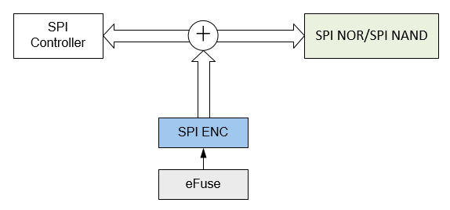

SPI ENC
7 Jun 2024
Read time: 1 minute(s)
Serial Peripheral Interface Encryption (SPI ENC) 模块用于对 SPI 总线上的数据进行在线加密和解密，实现对 CPU 透明的 SPI 数据加密存储。即 CPU 对 SPI 存储设备的读写数据是明文，但存储在 SPI 设备上的数据是密文，数据的加密和解密操作在数据传输过程中完成。
SPI ENC 用于 SPI 存储设备，即 SPI NOR/ SPI NAND，需要配合 SPI 控制器使用。
- 支持 AES-128-CTR 加密和解密
- 通过配置连接到不同的 SPI 控制器
- 通过 eFuse 配置密钥
- 支持明文和密文混合传输
- 不影响 SPI 总线传输带宽
- 不支持 SPI 全双工模式
- 内置 64 字节分组密钥 Buffer
- 支持全 0xFF 空页检测
用途：
-
可用于实现 SPI NAND / SPI NOR 的全盘加密
-
SPI NAND / SPI NOR 上的固件防拷贝
